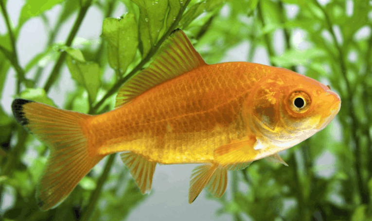

Systématique
- Ordre : Cypriniformes
- Famille : Cyprinidae
- Genre : Carassius
- Espèce : C. auratus

Carassius auratus est l'une des espèces de poissons les plus anciennement domestiquées au monde (plus de 1000 ans en Chine). Issu de la sélection du carassin argenté (Carassius gibelio), il existe aujourd'hui sous des dizaines de formes d'élevage très variées.
On distingue deux grands groupes morphologiques : les formes "communes" (corps élancé, nageoire caudale simple) comme le commun, le comète ou le shubunkin, qui peuvent atteindre 30 à 35 cm; et les formes "voilées" ou sélectionnées (corps ovoïde, nageoire caudale double) comme le télescope, l'oranda ou le ryukin, qui mesurent généralement entre 15 et 20 cm.
Contrairement aux idées reçues, c'est un poisson robuste, intelligent et de grande taille, totalement inadapté à la vie en bocal.
C'est une espèce grégaire et sociale qui doit vivre en groupe. Paisible, il ne montre aucune agressivité envers les autres espèces, mais peut manger tout ce qui rentre dans sa bouche.
C'est un fouisseur incessant : il passe ses journées à aspirer et recracher le substrat pour y trouver de la nourriture. Il est également très salissant (gros pollueur) en raison d'un système digestif peu efficace, nécessitant une filtration surdimensionnée.
Mode : ovipare.
La reproduction est saisonnière, généralement déclenchée par la remontée des températures au printemps. La femelle pond plusieurs milliers d'œufs adhésifs sur les plantes ou les supports de ponte.
Il n'y a pas de soins parentaux; les adultes dévorent leurs propres œufs s'ils ne sont pas séparés. Les alevins éclosent en quelques jours et nécessitent une alimentation fine.
Dimorphisme sexuel : En période de reproduction, le mâle développe des "boutons de noce" (petits points blancs) sur les opercules branchiaux et le premier rayon des nageoires pectorales. La femelle est généralement plus ronde, surtout vue de dessus.
Espérance de vie : Très longue. Environ 10 à 15 ans pour les variétés voilées, et 20 à 30 ans (voire plus) pour les formes communes en bassin.
L'espèce sauvage d'origine fréquente les rivières à courant lent, les lacs et les étangs d'Asie de l'Est riches en végétation. Les formes domestiques n'existent qu'en captivité (aquariums et bassins d'ornement).
Répartition

Origine naturelle :
- Chine (domestication initiale).
- Asie de l'Est.
- Introduit partout dans le monde (espèce cosmopolite).
Paramètres de maintenance
Température : 0 à 30 °C (tolère le gel en bassin pour les formes communes; 18-24 °C préféré pour les formes voilées fragiles).
pH : 7,0 à 8,0 (eau alcaline).
GH : 10 à 20 °dGH (eau dure).
Courant : Faible à modéré, surtout pour les formes à nageoires longues.
Volume conseillé : Minimum 100 L par poisson pour les formes voilées (soit 200 à 400 L pour un petit groupe). Pour les formes communes, 150 L par poisson minimum ou idéalement bassin extérieur.
Régime alimentaire
Régime : omnivore à tendance végétarienne/détritivore.
Il a besoin d'une grande part de végétaux pour son transit.
En aquarium, il accepte tout (granulés, paillettes), mais doit recevoir des légumes pochés (courgette, petits pois, épinards) et du vivant/congelé. Attention à ne pas suralimenter.